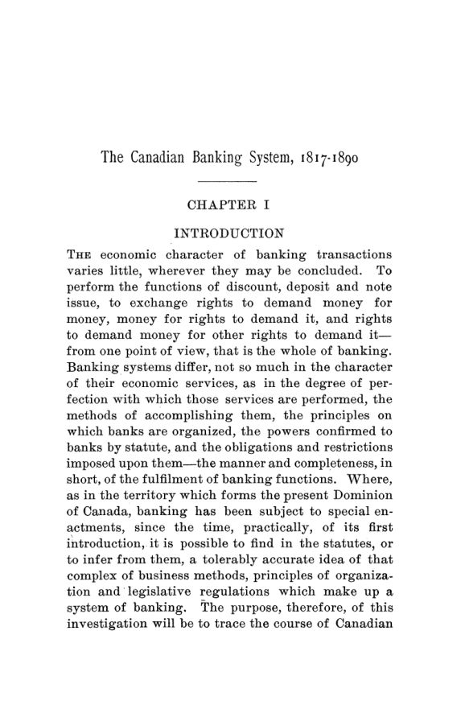

Breckenridge, 1895: a moeda bancária que o Canadá não quis amarrar
Leitura: 12 min
Logo depois da crise americana de 1893, Breckenridge reconstituiu 73 anos de leis bancárias do Canadá e mostrou um sistema de poucos bancos, muitas agências e notas sem lastro em títulos que eram seguras, conversíveis e elásticas.


Segunda-feira, 3 de julho de 1893, Winnipeg. O Commercial Bank of Manitoba fecha as portas. Desde maio os depositantes sacavam, e o banco pagava com suas próprias notas. Entre 31 de maio e 3 de julho, os depósitos à vista caíram C$ 189.813 e a circulação de notas subiu C$ 140.605. Quando as notas chegaram aos outros bancos e voltaram para resgate, restavam no cofre C$ 4.130. Resistiu à pressão extrema por um dia.
O interessante é o que veio depois. Protegidos por um fundo de garantia e atraídos pelos juros que as notas passavam a render, os bancos de Winnipeg e de toda a província continuaram a aceitar o papel do banco falido. As notas nunca tiveram desconto, e as que estavam com o público foram resgatadas em 16 de setembro. Seis anos antes, as notas do Maritime Bank, de St. John, chegaram a ser vendidas a 40 centavos por dólar, e o resgate integral demorou quase três anos.
A cena está em The Canadian Banking System, 1817–1890, de Roeliff Morton Breckenridge, ex-bolsista Seligman de economia no Columbia College. O livro saiu em janeiro, março e maio de 1895, nos números 1 a 3 do volume 10 das Publications, das páginas 13 a 476. No prefácio, de outubro de 1894, o autor dá duas razões. Ninguém havia contado aquela história de forma sistemática. E os Estados Unidos, recém-saídos da crise de 1893, discutiam a reforma da moeda: em 11 de outubro de 1894, a American Bankers' Association aprovara resoluções nesse sentido em Baltimore.
O que se deve perguntar a uma moeda?
Breckenridge começa pela Escócia, o modelo de que o Canadá mais se aproxima: poucos bancos, capitais grandes, muitas agências, notas emitidas sobre o crédito geral do banco e não sobre títulos depositados. Mas, desde 1845, os escoceses precisam guardar ouro para cada nota acima de um limite fixo; os canadenses não. Para julgar qualquer moeda, diz o autor, bastam três perguntas:
“É segura em última instância? É conversível de imediato? E é elástica?” (“Is it ultimately secure? Is it immediately convertible? and, Is it elastic?”)
Elástica quer dizer que o volume de moeda cresce e encolhe com a necessidade do comércio. A resposta canadense às três perguntas era incomum. Nenhum título garantia as notas, nem havia reserva mínima obrigatória contra elas. Cada banco podia emitir até o valor de seu capital integralizado, desde que não estivesse comprometido, em cédulas de C$ 5 ou múltiplos. A segurança vinha de outro lugar.
Se não há títulos por trás, o que garante a nota?
Camadas. Desde 1880, o portador de notas tem prioridade sobre todos os ativos de um banco insolvente; nas quatro falências seguintes, todas as notas apresentadas foram pagas integralmente. Depois vem o passivo duplo: o acionista responde por até mais uma vez o valor de suas ações. Por fim, a lei de 1890 criou o Bank Circulation Redemption Fund, depositado no governo por todos os bancos, igual a 5% da circulação média de cada um.
O fundo funciona assim. A partir do dia da suspensão, as notas do banco quebrado rendem 6% ao ano. Se os liquidantes não providenciarem o pagamento em dois meses, o ministro das Finanças paga com o fundo, e os demais bancos repõem o que faltar, até 1% de sua circulação por ano. O governo não responde além do saldo do fundo: quem garante a moeda são os bancos, solidariamente.
A mesma lei obrigou cada banco a manter agências de resgate em sete cidades: Halifax, St. John, Charlottetown, Montreal, Toronto, Winnipeg e Victoria. Antes, a nota de um banco sem agência por perto circulava com desconto. A justificativa de Breckenridge para tanta proteção é fina: o pequeno comerciante, na prática, não pode recusar uma nota. É um credor quase involuntário e merece cuidado especial da lei.
Por que a nota canadense estica e a americana não?
Pelo interesse próprio, nos dois sentidos. Cada nota em circulação é um empréstimo sem juros que o público faz ao banco, por isso todo banco quer pôr em circulação o máximo de notas suas. Mas ninguém que tenha conta guarda mais notas do que precisa: devolve o excesso como depósito, que rende juros. E cada banco manda diariamente para resgate as notas dos concorrentes que recebe, para abrir espaço às próprias. Repassar ao público o papel de um rival seria servir-lhe de corretor de graça, ou emprestar-lhe sem juros:
“Qualquer dos dois serviços é uma forma de altruísmo a que o banqueiro canadense jamais se entrega” (“Either service is a form of altruism in which the Canadian banker will never indulge”)
A nota dos bancos nacionais americanos, garantida por títulos federais, segue outra lógica. O banqueiro só compra títulos para emitir notas quando os juros dos títulos compensam; se a taxa de desconto comercial é maior, ele recolhe as notas. Segundo Breckenridge, segurança e conversibilidade eram os únicos méritos da nota americana. A canadense tinha os dois e mais a elasticidade.
O Canadá chegou a tentar o modelo americano?
Duas vezes. A lei de free banking de 1850 copiou Nova York: o banco depositava títulos da província e recebia notas registradas no mesmo valor, com depósito mínimo de £25.000, ou C$ 100 mil. A ideia era levar bancos às cidades pequenas, mas o capital local ficava trancado em títulos, e só 50% a 90% das notas permaneciam em circulação. A lei reduzia o crédito onde pretendia aumentá-lo. Seis bancos a usaram; dos cinco primeiros, só o Molsons sobreviveu. Foi revogada em 1866.
Em 1869, o ministro das Finanças John Rose propôs exigir garantia em títulos para toda a circulação. Os bancos reagiram, e cerca de 72 petições contrárias chegaram à Câmara dos Comuns, a maioria de cidades e associações comerciais. Rose retirou as resoluções em 15 de junho e deixou o ministério dois meses e meio depois. O autor insinua um motivo fiscal: a mudança renderia ao governo mais de 12 milhões de dólares.
O sucessor, Sir Francis Hincks, consultou os banqueiros. Daí saiu a lei de 1871, sancionada em 14 de abril, a primeira lei bancária geral do Domínio. Um banco novo precisava de C$ 500 mil de capital subscrito e C$ 100 mil integralizados. Breckenridge é seco quanto às invenções do próprio ministro: a permissão para emprestar sob garantia de ações de outros bancos mostrou-se perniciosa em menos de três anos e foi revogada em menos de oito. As reformas úteis tinham vindo dos banqueiros.
Quanto custaram as falências?
A maior foi a do Bank of Upper Canada, que suspendeu pagamentos em 18 de setembro de 1866. Durante décadas fora o banco do governo; seus bilhetes verdes eram guardados pelos fazendeiros como ouro. Na prática, era um banco de terras disfarçado. Entre acionistas e credores, sumiram ao menos cinco milhões de dólares, o equivalente a 17% de todo o capital bancário da província. O governo, maior credor, perdeu quase todo o seu depósito de mais de C$ 1,15 milhão, e o passivo duplo dos acionistas nunca foi cobrado.
Em 1879, seis bancos suspenderam pagamentos, cinco deles com sede em Montreal. O pior foi o Mechanics' Bank, que mantinha a circulação alta por métodos impróprios, com corretores e agentes em hotéis e vapores trocando suas notas. O epitáfio do autor:
“morreu, enfim, porque era corrupto demais para viver” (“it died at last because it was too corrupt to live”)
Em 1883, o governo depositou C$ 300 mil no Exchange Bank, de Montreal; segundo seus aliados, para evitar uma corrida e uma crise. O banco quebrou em 15 de setembro; o diretor-gerente devia-lhe C$ 226 mil e sumiu. As notas foram pagas integralmente, mas os outros credores perderam pouco menos de C$ 690 mil. Na Câmara, o governo sobreviveu às resoluções que condenavam os adiantamentos por 97 votos a 60.
Por que poucos bancos e tantas agências?
Porque tamanho dá estabilidade. Os Estados Unidos tinham cerca de 3.796 bancos nacionais, cem vezes o número de bancos canadenses, para uma população pouco mais de treze vezes maior. Só um dos dez bancos canadenses insolventes tinha capital acima de um milhão de dólares. Um banco grande absorve perdas que afundariam um pequeno e paga por gerentes melhores.
A agência leva o capital de onde sobra para onde falta. Nos Estados Unidos, os bancos de Massachusetts podiam ter dificuldade para aplicar a 4%, enquanto os do Colorado recebiam mais boas propostas a 10% do que podiam atender. No Canadá, segundo o banqueiro B. E. Walker, citado pelo autor, a diferença de juros entre o melhor tomador de Montreal ou Toronto e o comerciante comum do Noroeste não passava de um a dois pontos percentuais. As reservas das agências ficam na matriz, o que evitou a disputa entre bancos do interior e da cidade que precedeu a crise americana de 1893. Desde 1837, o Canadá não tivera suspensão geral de pagamentos em espécie.
O autor só elogia?
Não. As cartas de autorização eram fáceis demais de obter: desde a Confederação, foram concedidas 44, e 20 caducaram por falta de uso. A lei de 1890 elevou a exigência para C$ 500 mil subscritos e C$ 250 mil integralizados, depositados em espécie no Ministério das Finanças por quatro semanas antes de o banco abrir.
A crítica mais dura vai ao governo. Ao obrigar os bancos a manter ao menos 40% de suas reservas de caixa em Dominion notes, o papel-moeda do governo, o Estado arrancou deles um empréstimo permanente sem juros, que nos cinco anos anteriores variou de 10 a 14 milhões de dólares. Para Breckenridge, a regra reduz o ouro do país e enfraquece a reserva para os pagamentos externos.
O fecho é sobre continuidade. Não houve, como nos Estados Unidos, luta recorrente por um grande banco do governo, epidemia de bancos fantasmas ou troca de um sistema por outro. As funções econômicas dos bancos, conclui o autor, eram as mesmas sob a lei de 1890 e sob as cartas provinciais de 1821.
Na minha leitura
Na minha leitura, o livro é uma lição sobre onde colocar a garantia de uma moeda bancária. Os americanos amarraram a nota a títulos públicos e ganharam segurança à custa da elasticidade; a quantidade de moeda passou a depender dos juros da dívida, não da colheita. Os canadenses puseram a garantia no próprio sistema: prioridade do portador, responsabilidade dos acionistas, fundo comum e resgate diário entre concorrentes. Breckenridge mostra que a disciplina mais eficaz não era o fiscal do governo, mas o banco rival que devolvia as notas todas as manhãs.
A outra lição é institucional. O sistema canadense não nasceu de um projeto brilhante; foi remendado ao longo de 73 anos, quase sempre depois de uma falência, e quase sempre por sugestão de quem operava os bancos. As duas tentativas de importar um modelo pronto fracassaram. O próprio autor aponta os defeitos que restavam. Mas sugere que, em regulação financeira, corrigir o que falhou costuma render mais do que recomeçar do zero.
Glossário
- Nota bancária
- promessa de pagamento ao portador, emitida por um banco privado, que circula como dinheiro.
- Conversibilidade
- garantia de que a nota pode ser trocada a qualquer momento pela moeda metálica que promete.
- Elasticidade da moeda
- capacidade de o volume de moeda crescer e encolher conforme a necessidade do comércio.
- Passivo duplo (double liability)
- regra pela qual o acionista, na falência, responde por até mais uma vez o valor nominal de suas ações.
- Primeiro privilégio (first lien)
- prioridade do portador de notas sobre os demais credores na partilha dos ativos de um banco falido.
- Bank Circulation Redemption Fund
- fundo de 5% da circulação, depositado no governo por todos os bancos, para pagar logo as notas de um banco que quebre.
- Free banking
- sistema em que qualquer banco que cumpra a lei pode emitir notas, desde que garantidas por títulos depositados no governo.
- Notas garantidas por títulos
- notas cuja emissão exige depósito prévio de títulos públicos de valor equivalente, como as dos bancos nacionais americanos.
- Branch banking
- sistema em que um banco opera muitas agências sob a direção da matriz, com o mesmo capital e o mesmo crédito.
- Dominion notes
- papel-moeda emitido pelo governo canadense, conversível em ouro, de curso legal.
- Carta (charter)
- ato do Parlamento que autoriza a criação de um banco e fixa suas regras.
Fontes
- The Canadian Banking System 1817-1890 (pp. 13–476). JSTOR · Internet Archive (PDF)
- Sumário da edição no JSTOR: Publications of the American Economic Association, vol. 10, nº 1/3.
Documento em domínio público (EUA, publicado antes de 1931), via JSTOR Early Journal Content e Internet Archive. Resumo e comentário do autor deste site, sem afiliação com a American Economic Association. Encontrou um erro? Escreva: a correção é publicada no próprio texto, com data.
← Nº 44 · Nova York, 1894: a greve de Pullman, o papa e o limite da lei Nº 46 · Nova York, 1894: o cheque, o monopólio e os desempregados →